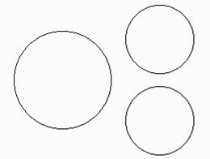
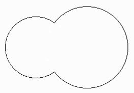

Problem A
The Richest Man of the Universe
Input: Standard Input
Output: Standard Output
Today I am going to tell you the story of the Richest Man
of the Universe. He lives in planet Archadia that is 200 light years away from the
Earth. A parallel human civilization exists in that planet. His name is Charge
Doors. A strange name to us but if you are very intelligent you find the
significance of his name. He graduated (probably) from a University which is
now the best in the Universe for Medical Study (You may wonder why you don’t
know this University. It is because the news is broadcasted from Archadia and
you will know it 200 years later!) Though he is a very brilliant programmer, in
his student life he spent much of his time in a Virus Research Lab for some
unknown reasons (maybe his friends know). He worked there with a kind of Virus
called “Archadian Bascillae”. These viruses are circular in shape. They can do
two operations: fission and fusion. Fission occurs in breeding season and
fusion occurs during hostile season.
In breeding season each virus is kept in a rectangular
transparent box. After fission two viruses of equal size and shape (circular of
course) is created. After fission they maintain maximum possible distance
between them in the box. Given the radius of the initial virus and the size of
the box it was kept in you will have to determine the maximum distance possible
between the centers of the two viruses.
|  |  | Fig 1: Fission Operation | Fig 2: Fusion Operation |
During fusion two viruses merges but this merging is
not complete. Some portion of one virus overlaps some portion of the other
virus. The thickness of their common portion is doubled but thickness in all
other portion remains the same (This incident is like two rigid disks stick to
each other with the help of glue). The thing to note here is that all the
single viruses are of equal thickness though their size may vary. You will have
to determine the area covered by these semi-merged viruses.
You have to solve this problem, as you are about to give an interview to his large software company. For some odd reasons he asks everyone to solve this problem.
Input
First line of the input file contains an integer N that indicates how many sets of inputs are there. Next N lines contains N sets of inputs.
Every input begins with a character C whose
value is either ‘S’ (for fission) or ‘M” (for fusion).
For fission, next there will be three real numbers, L (length of the rectangular box), W (width of the rectangular box) and R (radius of the virus to make fission). For fusion after character ‘M’ there will be three real numbers, R1 (radius of the first virus), R2 (radius of the second virus) and d (the distance between these two viruses and d≥max(R1,R2)).
No numerical value in the input will be negative and also there value will not exceed 2000.
Output
For each line of input you will have to print one or
two lines of output.
For fission type input you will have to print the
maximum possible distance between the centers of the two viruses according to
the sample output format. If there is not enough space for fission in the
rectangular box print the line “Not enough space for fission.” Fission
is impossible if the viruses cannot remain separated (not overlapped) in the
box at any possible position. If fission is impossible then there is no need to
print the maximum possible distance.
For fusion type of
input you have to print the compaction ratio of the virus according to the
sample output. Compaction Ratio is defined as (Surface area covered by the
merged virus)/(Surface area covered by first virus before merging + Surface
Area covered by the second virus before merging). When the printed compaction ration is 1.0000 you will have to print in the next line “No
compaction has occurred.” Another
important thing is that when no merging has occurred you will have to print the
compaction ratio as 1.0000 and in the next line you will have to print, “No
compaction has occurred.”
Print a blank line
after the output for each set of input.
Sample Input
4Sample Output
12.2836Shahriar
Manzoor